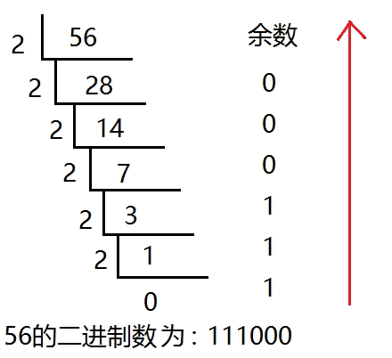
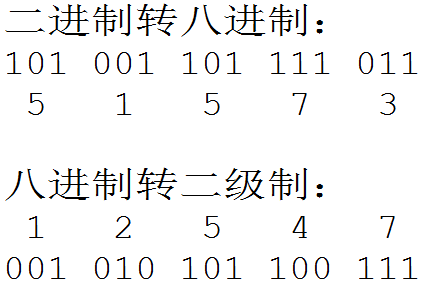
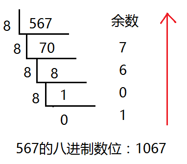
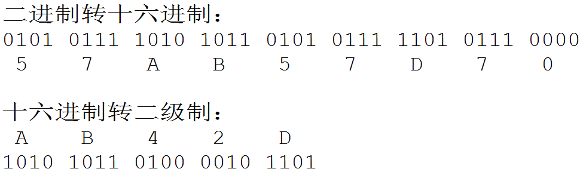
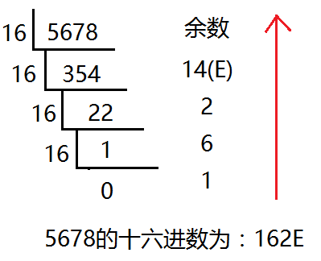
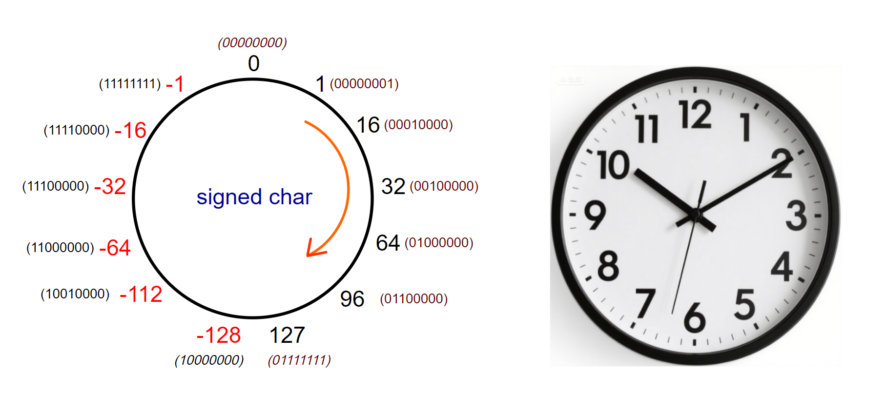

<!DOCTYPE lake>
<h1 data-lake-id="Pel1V" id="Pel1V"><span data-lake-id="u006a3a85" id="u006a3a85">进制</span></h1><ul list="u7c9118e2"><li data-lake-id="u2ec216b6" fid="u4a64e5b8" id="u2ec216b6"><span data-lake-id="u4ff48d4e" id="u4ff48d4e" style="color: rgb(0,0,0)">进制也就是进位制，是人们规定的一种进位方法</span></li><li data-lake-id="ud279b90c" fid="u4a64e5b8" id="ud279b90c"><span data-lake-id="u2ddb7d51" id="u2ddb7d51" style="color: rgb(0,0,0)">对于任何一种进制—X进制，就表示某一位置上的数运算时是逢X进一位</span></li></ul><ul data-lake-indent="1" list="u7c9118e2"><li data-lake-id="ub28e1909" fid="u4a64e5b8" id="ub28e1909"><span data-lake-id="u7621f73e" id="u7621f73e" style="color: rgb(0,0,0)">十进制是逢十进一，十六进制是逢十六进一，二进制就是逢二进一，以此类推，x进制就是逢x进位</span></li></ul><table class="lake-table" data-lake-id="uE6uw" id="uE6uw" margin="true" style="width: 750px" width-mode="normal"><colgroup><col width="187"/><col width="187"/><col width="187"/><col width="189"/></colgroup><tbody><tr data-lake-id="u47772d83" id="u47772d83"><td data-lake-id="ucadda365" id="ucadda365" style="background-color: rgb(249,249,249)"><p data-lake-id="ue9f1401d" id="ue9f1401d" style="text-align: center"><strong><span class="lake-fontsize-12" data-lake-id="uac36a375" id="uac36a375" style="color: rgb(68,68,68)">十进制</span></strong></p></td><td data-lake-id="u62597010" id="u62597010" style="background-color: rgb(249,249,249)"><p data-lake-id="ua51abcf7" id="ua51abcf7" style="text-align: center"><strong><span class="lake-fontsize-12" data-lake-id="u9fa1db18" id="u9fa1db18" style="color: rgb(68,68,68)">二进制</span></strong></p></td><td data-lake-id="u9157b9a5" id="u9157b9a5" style="background-color: rgb(249,249,249)"><p data-lake-id="u1d9ae0d7" id="u1d9ae0d7" style="text-align: center"><strong><span class="lake-fontsize-12" data-lake-id="ubcee446b" id="ubcee446b" style="color: rgb(68,68,68)">八进制</span></strong></p></td><td data-lake-id="u5e3564ad" id="u5e3564ad" style="background-color: rgb(249,249,249)"><p data-lake-id="u4ee01a8f" id="u4ee01a8f" style="text-align: center"><strong><span class="lake-fontsize-12" data-lake-id="u11661ea4" id="u11661ea4" style="color: rgb(68,68,68)">十六进制</span></strong></p></td></tr><tr data-lake-id="ua60921c7" id="ua60921c7"><td data-lake-id="u3469a47d" id="u3469a47d"><p data-lake-id="u17be0125" id="u17be0125" style="text-align: center"><span class="lake-fontsize-12" data-lake-id="udb075bdc" id="udb075bdc" style="color: rgb(0,0,0)">0</span></p></td><td data-lake-id="u71ad599b" id="u71ad599b"><p data-lake-id="u7652eed6" id="u7652eed6" style="text-align: center"><span class="lake-fontsize-12" data-lake-id="uacee3684" id="uacee3684" style="color: rgb(68,68,68)">0</span></p></td><td data-lake-id="u03495e06" id="u03495e06"><p data-lake-id="u13c90802" id="u13c90802" style="text-align: center"><span class="lake-fontsize-12" data-lake-id="u11b0a33b" id="u11b0a33b">0</span></p></td><td data-lake-id="u18c1d3a8" id="u18c1d3a8"><p data-lake-id="u0ddaed1b" id="u0ddaed1b" style="text-align: center"><span class="lake-fontsize-12" data-lake-id="u32a6cfa2" id="u32a6cfa2">0</span></p></td></tr><tr data-lake-id="u6b388452" id="u6b388452"><td data-lake-id="uf1e2e7cd" id="uf1e2e7cd"><p data-lake-id="ufc8d01e6" id="ufc8d01e6" style="text-align: center"><span class="lake-fontsize-12" data-lake-id="u9945bf66" id="u9945bf66" style="color: rgb(0,0,0)">1</span></p></td><td data-lake-id="ucbd4f68e" id="ucbd4f68e"><p data-lake-id="ub791187f" id="ub791187f" style="text-align: center"><span class="lake-fontsize-12" data-lake-id="u12111c90" id="u12111c90" style="color: rgb(68,68,68)">1</span></p></td><td data-lake-id="ucec6a2f2" id="ucec6a2f2"><p data-lake-id="u73eec548" id="u73eec548" style="text-align: center"><span class="lake-fontsize-12" data-lake-id="ue972ce00" id="ue972ce00">1</span></p></td><td data-lake-id="u688912f6" id="u688912f6"><p data-lake-id="ue3f45697" id="ue3f45697" style="text-align: center"><span class="lake-fontsize-12" data-lake-id="u53021382" id="u53021382">1</span></p></td></tr><tr data-lake-id="u01b11acf" id="u01b11acf"><td data-lake-id="u5a0d4b24" id="u5a0d4b24"><p data-lake-id="ufff77e59" id="ufff77e59" style="text-align: center"><span class="lake-fontsize-12" data-lake-id="ubae856c7" id="ubae856c7" style="color: rgb(0,0,0)">2</span></p></td><td data-lake-id="u6b72b5fa" id="u6b72b5fa"><p data-lake-id="u0822c266" id="u0822c266" style="text-align: center"><span class="lake-fontsize-12" data-lake-id="uc99d5875" id="uc99d5875" style="color: rgb(68,68,68)">10</span></p></td><td data-lake-id="u277157c8" id="u277157c8"><p data-lake-id="ub4755250" id="ub4755250" style="text-align: center"><span class="lake-fontsize-12" data-lake-id="u020a6a9e" id="u020a6a9e">2</span></p></td><td data-lake-id="u393cee0d" id="u393cee0d"><p data-lake-id="ub653f6f7" id="ub653f6f7" style="text-align: center"><span class="lake-fontsize-12" data-lake-id="u28f273c0" id="u28f273c0">2</span></p></td></tr><tr data-lake-id="u395cfb99" id="u395cfb99"><td data-lake-id="ub35cd570" id="ub35cd570"><p data-lake-id="u53916df6" id="u53916df6" style="text-align: center"><span class="lake-fontsize-12" data-lake-id="ub65ddc08" id="ub65ddc08" style="color: rgb(0,0,0)">3</span></p></td><td data-lake-id="u68bf1c18" id="u68bf1c18"><p data-lake-id="u4622574d" id="u4622574d" style="text-align: center"><span class="lake-fontsize-12" data-lake-id="ucdf7e30f" id="ucdf7e30f" style="color: rgb(68,68,68)">11</span></p></td><td data-lake-id="uc1217dd2" id="uc1217dd2"><p data-lake-id="uc6cc9dc1" id="uc6cc9dc1" style="text-align: center"><span class="lake-fontsize-12" data-lake-id="ucefc4e93" id="ucefc4e93">3</span></p></td><td data-lake-id="u570741f4" id="u570741f4"><p data-lake-id="uf7aa5b6f" id="uf7aa5b6f" style="text-align: center"><span class="lake-fontsize-12" data-lake-id="ub1ebe6a7" id="ub1ebe6a7">3</span></p></td></tr><tr data-lake-id="ub0095a52" id="ub0095a52"><td data-lake-id="uc44c794e" id="uc44c794e"><p data-lake-id="u37a716fd" id="u37a716fd" style="text-align: center"><span class="lake-fontsize-12" data-lake-id="ub1badf7b" id="ub1badf7b" style="color: rgb(0,0,0)">4</span></p></td><td data-lake-id="u3fd01ec9" id="u3fd01ec9"><p data-lake-id="uea7f8c74" id="uea7f8c74" style="text-align: center"><span class="lake-fontsize-12" data-lake-id="u3bcb832e" id="u3bcb832e" style="color: rgb(68,68,68)">100</span></p></td><td data-lake-id="uafd320a8" id="uafd320a8"><p data-lake-id="u9fdb06ea" id="u9fdb06ea" style="text-align: center"><span class="lake-fontsize-12" data-lake-id="u394b5922" id="u394b5922">4</span></p></td><td data-lake-id="u21e1a21e" id="u21e1a21e"><p data-lake-id="u13897b0a" id="u13897b0a" style="text-align: center"><span class="lake-fontsize-12" data-lake-id="u0a2413bb" id="u0a2413bb">4</span></p></td></tr><tr data-lake-id="u838b44c1" id="u838b44c1"><td data-lake-id="u9a074405" id="u9a074405"><p data-lake-id="uc1b3940a" id="uc1b3940a" style="text-align: center"><span class="lake-fontsize-12" data-lake-id="u1dacd7a8" id="u1dacd7a8" style="color: rgb(0,0,0)">5</span></p></td><td data-lake-id="ue46944df" id="ue46944df"><p data-lake-id="uc410a54b" id="uc410a54b" style="text-align: center"><span class="lake-fontsize-12" data-lake-id="uf332e947" id="uf332e947" style="color: rgb(68,68,68)">101</span></p></td><td data-lake-id="u921fd66a" id="u921fd66a"><p data-lake-id="u3843aa30" id="u3843aa30" style="text-align: center"><span class="lake-fontsize-12" data-lake-id="udfbe6774" id="udfbe6774">5</span></p></td><td data-lake-id="u3710360a" id="u3710360a"><p data-lake-id="u31802345" id="u31802345" style="text-align: center"><span class="lake-fontsize-12" data-lake-id="u7e3d1996" id="u7e3d1996">5</span></p></td></tr><tr data-lake-id="ue944b471" id="ue944b471"><td data-lake-id="u494d52f1" id="u494d52f1"><p data-lake-id="u8fc039a9" id="u8fc039a9" style="text-align: center"><span class="lake-fontsize-12" data-lake-id="u3c7a0c08" id="u3c7a0c08" style="color: rgb(0,0,0)">6</span></p></td><td data-lake-id="u4bd5b0e3" id="u4bd5b0e3"><p data-lake-id="uf71cc9ea" id="uf71cc9ea" style="text-align: center"><span class="lake-fontsize-12" data-lake-id="u755222b4" id="u755222b4" style="color: rgb(68,68,68)">110</span></p></td><td data-lake-id="ue7d84e79" id="ue7d84e79"><p data-lake-id="u527e936f" id="u527e936f" style="text-align: center"><span class="lake-fontsize-12" data-lake-id="u5f84bdf9" id="u5f84bdf9">6</span></p></td><td data-lake-id="ua59f777b" id="ua59f777b"><p data-lake-id="u8da6ea5c" id="u8da6ea5c" style="text-align: center"><span class="lake-fontsize-12" data-lake-id="udcdbc4eb" id="udcdbc4eb">6</span></p></td></tr><tr data-lake-id="u55233a77" id="u55233a77"><td data-lake-id="u07941063" id="u07941063"><p data-lake-id="u3212d18d" id="u3212d18d" style="text-align: center"><span class="lake-fontsize-12" data-lake-id="ua7107529" id="ua7107529" style="color: rgb(0,0,0)">7</span></p></td><td data-lake-id="u6f12702b" id="u6f12702b"><p data-lake-id="u61ced7e3" id="u61ced7e3" style="text-align: center"><span class="lake-fontsize-12" data-lake-id="uf4ff9951" id="uf4ff9951" style="color: rgb(68,68,68)">111</span></p></td><td data-lake-id="u71ef47be" id="u71ef47be"><p data-lake-id="u1689c80e" id="u1689c80e" style="text-align: center"><span class="lake-fontsize-12" data-lake-id="u1f7a50a7" id="u1f7a50a7">7</span></p></td><td data-lake-id="u7d6e4fee" id="u7d6e4fee"><p data-lake-id="uaae5f86f" id="uaae5f86f" style="text-align: center"><span class="lake-fontsize-12" data-lake-id="ua471b176" id="ua471b176">7</span></p></td></tr><tr data-lake-id="u47947d01" id="u47947d01"><td data-lake-id="u06ca82d3" id="u06ca82d3"><p data-lake-id="u2eca6c5e" id="u2eca6c5e" style="text-align: center"><span class="lake-fontsize-12" data-lake-id="u1f4b0fdd" id="u1f4b0fdd" style="color: rgb(0,0,0)">8</span></p></td><td data-lake-id="u31461373" id="u31461373"><p data-lake-id="u11550d11" id="u11550d11" style="text-align: center"><span class="lake-fontsize-12" data-lake-id="u982e9ada" id="u982e9ada" style="color: rgb(68,68,68)">1000</span></p></td><td data-lake-id="u6c03676d" id="u6c03676d"><p data-lake-id="u4ea11c0f" id="u4ea11c0f" style="text-align: center"><span class="lake-fontsize-12" data-lake-id="uae52cdcb" id="uae52cdcb">10</span></p></td><td data-lake-id="uef71e2ba" id="uef71e2ba"><p data-lake-id="uda16e1e0" id="uda16e1e0" style="text-align: center"><span class="lake-fontsize-12" data-lake-id="u69d052fb" id="u69d052fb">8</span></p></td></tr><tr data-lake-id="ua7d260fa" id="ua7d260fa"><td data-lake-id="uc44ebb8a" id="uc44ebb8a"><p data-lake-id="u6e605b8e" id="u6e605b8e" style="text-align: center"><span class="lake-fontsize-12" data-lake-id="u9b8dfa58" id="u9b8dfa58" style="color: rgb(0,0,0)">9</span></p></td><td data-lake-id="u44ee7b17" id="u44ee7b17"><p data-lake-id="u8fff52a6" id="u8fff52a6" style="text-align: center"><span class="lake-fontsize-12" data-lake-id="u0767e290" id="u0767e290" style="color: rgb(68,68,68)">1001</span></p></td><td data-lake-id="u1e8ff8b3" id="u1e8ff8b3"><p data-lake-id="ud87c5ef3" id="ud87c5ef3" style="text-align: center"><span class="lake-fontsize-12" data-lake-id="u81aa844f" id="u81aa844f">11</span></p></td><td data-lake-id="uc7f43fba" id="uc7f43fba"><p data-lake-id="u4397346b" id="u4397346b" style="text-align: center"><span class="lake-fontsize-12" data-lake-id="u13085aec" id="u13085aec">9</span></p></td></tr><tr data-lake-id="u24359160" id="u24359160"><td data-lake-id="ua32a2050" id="ua32a2050"><p data-lake-id="u30634f7e" id="u30634f7e" style="text-align: center"><span class="lake-fontsize-12" data-lake-id="u1b18c29f" id="u1b18c29f" style="color: rgb(0,0,0)">10</span></p></td><td data-lake-id="uffcf680c" id="uffcf680c"><p data-lake-id="u3bbdb864" id="u3bbdb864" style="text-align: center"><span class="lake-fontsize-12" data-lake-id="ue9fd9de2" id="ue9fd9de2" style="color: rgb(68,68,68)">1010</span></p></td><td data-lake-id="ue935f3bd" id="ue935f3bd"><p data-lake-id="uac5f34c2" id="uac5f34c2" style="text-align: center"><span class="lake-fontsize-12" data-lake-id="ufcc42a09" id="ufcc42a09">12</span></p></td><td data-lake-id="ud139632d" id="ud139632d"><p data-lake-id="u9973a3ac" id="u9973a3ac" style="text-align: center"><span class="lake-fontsize-12" data-lake-id="u24d009b8" id="u24d009b8">A</span></p></td></tr><tr data-lake-id="u8a527b29" id="u8a527b29"><td data-lake-id="ua2505203" id="ua2505203"><p data-lake-id="ue93e1f65" id="ue93e1f65" style="text-align: center"><span class="lake-fontsize-12" data-lake-id="udda7cee2" id="udda7cee2" style="color: rgb(0,0,0)">11</span></p></td><td data-lake-id="u5e8a554c" id="u5e8a554c"><p data-lake-id="u3ed44021" id="u3ed44021" style="text-align: center"><span class="lake-fontsize-12" data-lake-id="u5cc40fd7" id="u5cc40fd7" style="color: rgb(68,68,68)">1011</span></p></td><td data-lake-id="u2734f786" id="u2734f786"><p data-lake-id="ufb5ee4a7" id="ufb5ee4a7" style="text-align: center"><span class="lake-fontsize-12" data-lake-id="u28829357" id="u28829357">13</span></p></td><td data-lake-id="u6464201f" id="u6464201f"><p data-lake-id="u404bc45c" id="u404bc45c" style="text-align: center"><span class="lake-fontsize-12" data-lake-id="u6a9d3ea7" id="u6a9d3ea7">B</span></p></td></tr><tr data-lake-id="uff2aa01d" id="uff2aa01d"><td data-lake-id="u51a9d919" id="u51a9d919"><p data-lake-id="ud6e4c1c5" id="ud6e4c1c5" style="text-align: center"><span class="lake-fontsize-12" data-lake-id="u19f4e06e" id="u19f4e06e" style="color: rgb(0,0,0)">12</span></p></td><td data-lake-id="u0454b345" id="u0454b345"><p data-lake-id="u8de24a71" id="u8de24a71" style="text-align: center"><span class="lake-fontsize-12" data-lake-id="u41decc99" id="u41decc99" style="color: rgb(68,68,68)">1100</span></p></td><td data-lake-id="u7b83e2fa" id="u7b83e2fa"><p data-lake-id="u5ff35759" id="u5ff35759" style="text-align: center"><span class="lake-fontsize-12" data-lake-id="uf7f1f188" id="uf7f1f188">14</span></p></td><td data-lake-id="uf0d7f835" id="uf0d7f835"><p data-lake-id="u18f8bf23" id="u18f8bf23" style="text-align: center"><span class="lake-fontsize-12" data-lake-id="uea12466b" id="uea12466b">C</span></p></td></tr><tr data-lake-id="uf00e8383" id="uf00e8383"><td data-lake-id="uefa36625" id="uefa36625"><p data-lake-id="u51dccf60" id="u51dccf60" style="text-align: center"><span class="lake-fontsize-12" data-lake-id="u570be2a6" id="u570be2a6" style="color: rgb(0,0,0)">13</span></p></td><td data-lake-id="u187c650c" id="u187c650c"><p data-lake-id="u8e87a833" id="u8e87a833" style="text-align: center"><span class="lake-fontsize-12" data-lake-id="u5ddc41a3" id="u5ddc41a3" style="color: rgb(68,68,68)">1101</span></p></td><td data-lake-id="uea004cdc" id="uea004cdc"><p data-lake-id="u91450fbd" id="u91450fbd" style="text-align: center"><span class="lake-fontsize-12" data-lake-id="u58718215" id="u58718215">15</span></p></td><td data-lake-id="ufbf63533" id="ufbf63533"><p data-lake-id="u0eed35cc" id="u0eed35cc" style="text-align: center"><span class="lake-fontsize-12" data-lake-id="u1a4b0ef7" id="u1a4b0ef7">D</span></p></td></tr><tr data-lake-id="uad6c6cb8" id="uad6c6cb8"><td data-lake-id="u6eebb785" id="u6eebb785"><p data-lake-id="ud7821e44" id="ud7821e44" style="text-align: center"><span class="lake-fontsize-12" data-lake-id="u2450e35c" id="u2450e35c" style="color: rgb(0,0,0)">14</span></p></td><td data-lake-id="u6e73944d" id="u6e73944d"><p data-lake-id="u6563359a" id="u6563359a" style="text-align: center"><span class="lake-fontsize-12" data-lake-id="uf194ec2a" id="uf194ec2a" style="color: rgb(68,68,68)">1110</span></p></td><td data-lake-id="ueac1b59e" id="ueac1b59e"><p data-lake-id="u59ac9050" id="u59ac9050" style="text-align: center"><span class="lake-fontsize-12" data-lake-id="ua305720e" id="ua305720e">16</span></p></td><td data-lake-id="u0082b2cd" id="u0082b2cd"><p data-lake-id="u822662ca" id="u822662ca" style="text-align: center"><span class="lake-fontsize-12" data-lake-id="u3a7d5b4e" id="u3a7d5b4e">E</span></p></td></tr><tr data-lake-id="u8825b0e1" id="u8825b0e1"><td data-lake-id="ufcde3434" id="ufcde3434"><p data-lake-id="u5b8574f6" id="u5b8574f6" style="text-align: center"><span class="lake-fontsize-12" data-lake-id="u9b4d0872" id="u9b4d0872" style="color: rgb(0,0,0)">15</span></p></td><td data-lake-id="u381b77dc" id="u381b77dc"><p data-lake-id="ue4103a78" id="ue4103a78" style="text-align: center"><span class="lake-fontsize-12" data-lake-id="u47179a14" id="u47179a14" style="color: rgb(68,68,68)">1111</span></p></td><td data-lake-id="ud8e79fc4" id="ud8e79fc4"><p data-lake-id="u3dcc409e" id="u3dcc409e" style="text-align: center"><span class="lake-fontsize-12" data-lake-id="u8dbad0e3" id="u8dbad0e3">17</span></p></td><td data-lake-id="u6b5acda7" id="u6b5acda7"><p data-lake-id="u60e72764" id="u60e72764" style="text-align: center"><span class="lake-fontsize-12" data-lake-id="u06f55c37" id="u06f55c37">F</span></p></td></tr><tr data-lake-id="u4f2bcc09" id="u4f2bcc09"><td data-lake-id="u457724ed" id="u457724ed"><p data-lake-id="u18b25cbe" id="u18b25cbe" style="text-align: center"><span class="lake-fontsize-12" data-lake-id="ue11d04bc" id="ue11d04bc" style="color: rgb(0,0,0)">16</span></p></td><td data-lake-id="u5d4eb18f" id="u5d4eb18f"><p data-lake-id="u6e522eda" id="u6e522eda" style="text-align: center"><span class="lake-fontsize-12" data-lake-id="u0168b390" id="u0168b390" style="color: rgb(68,68,68)">10000</span></p></td><td data-lake-id="u353fac8d" id="u353fac8d"><p data-lake-id="u358ab7d5" id="u358ab7d5" style="text-align: center"><span class="lake-fontsize-12" data-lake-id="udeb412a2" id="udeb412a2">20</span></p></td><td data-lake-id="u16972a47" id="u16972a47"><p data-lake-id="u3450480e" id="u3450480e" style="text-align: center"><span class="lake-fontsize-12" data-lake-id="u52db9a8b" id="u52db9a8b">10</span></p></td></tr></tbody></table><h2 data-lake-id="mZQaP" id="mZQaP"><span class="lake-fontsize-12" data-lake-id="ua14c7dbc" id="ua14c7dbc">二进制</span></h2><ul list="u40ea9843"><li data-lake-id="u295a5969" fid="u2eba14ff" id="u295a5969"><span data-lake-id="u50bcb2be" id="u50bcb2be" style="color: rgb(0,0,0)">二进制是计算技术中广泛采用的一种数制。二进制数据是用0和1两个数码来表示的数</span></li></ul><ul data-lake-indent="1" list="u40ea9843"><li data-lake-id="uc2d22c24" fid="u2eba14ff" id="uc2d22c24"><span data-lake-id="u13838987" id="u13838987" style="color: rgb(0,0,0)">它的基数为2，进位规则是“逢二进一”，借位规则是“借一当二”</span></li></ul><ul list="u40ea9843" start="2"><li data-lake-id="u7bf4d5bb" fid="u2eba14ff" id="u7bf4d5bb"><span data-lake-id="u2b6de12b" id="u2b6de12b" style="color: rgb(0,0,0)">当前的计算机系统使用的基本上是二进制系统，</span><span data-comment-id="40504477" data-lake-id="u96a8c563" id="u96a8c563" style="color: rgb(255,0,0)">数据在计算机中主要是以补码的形式存储的</span></li><li data-lake-id="u87a1beb8" fid="u2eba14ff" id="u87a1beb8"><span data-lake-id="u7605c3c3" id="u7605c3c3">十进制转化二进制的方法：</span></li></ul><ul data-lake-indent="1" list="u40ea9843"><li data-lake-id="udc87782b" fid="u2eba14ff" id="udc87782b"><span data-lake-id="u442a1a80" id="u442a1a80">用十进制数除以2，分别取余数和商数，商数为0的时候，将余数倒着数就是转化后的结果</span></li></ul><p data-lake-id="u00f17f62" id="u00f17f62" style="text-indent: 2em; padding-left: 2em"></p><p data-lake-id="u0b8e5bca" id="u0b8e5bca" style="text-indent: 2em; padding-left: 2em"><span data-lake-id="ud0ecd058" id="ud0ecd058">口诀：除二取余，倒序排列法</span></p><p data-lake-id="ua5c80fa0" id="ua5c80fa0"><br/></p><h2 data-lake-id="nr274" id="nr274"><span class="lake-fontsize-12" data-lake-id="u8ca5f6ac" id="u8ca5f6ac">八进制</span></h2><ul list="u5c17246c"><li data-lake-id="u73c7c942" fid="u870b5761" id="u73c7c942"><span data-lake-id="uee87d09b" id="uee87d09b" style="color: rgb(0,0,0)">八进制，Octal，缩写OCT或O，一种以8为基数的计数法，采用0，1，2，3，4，5，6，7八个数字，逢八进1</span></li></ul><ul data-lake-indent="1" list="u5c17246c"><li data-lake-id="uae0c426e" fid="u870b5761" id="uae0c426e"><span data-lake-id="u0a68e620" id="u0a68e620" style="color: rgb(0,0,0)">一些编程语言中常常以数字0开始表明该数字是八进制</span></li></ul><ul list="u5c17246c" start="2"><li data-lake-id="u4425a086" fid="u870b5761" id="u4425a086"><span data-lake-id="u794d703a" id="u794d703a" style="color: rgb(0,0,0)">八进制的数和二进制数可以按位对应（</span><span data-lake-id="u91ac9cbc" id="u91ac9cbc" style="color: rgb(255,0,0)">八进制一位对应二进制三位</span><span data-lake-id="udcd3381b" id="udcd3381b" style="color: rgb(0,0,0)">），因此常应用在计算机语言中</span></li><li data-lake-id="uf37dbdc5" fid="u870b5761" id="uf37dbdc5"><span data-lake-id="u29ce555f" id="u29ce555f">八进制和二进制互转：</span></li></ul><p data-lake-id="ufdc9087f" id="ufdc9087f" style="padding-left: 2em"></p><ul list="u53176fce"><li data-lake-id="u54e2cf68" fid="u435f4c95" id="u54e2cf68"><span data-lake-id="ubad82c70" id="ubad82c70">十进制转化八进制的方法：</span></li></ul><ul data-lake-indent="1" list="u53176fce"><li data-lake-id="uc2f77235" fid="u435f4c95" id="uc2f77235"><span data-lake-id="uc519e599" id="uc519e599">用十进制数除以8，分别取余数和商数，商数为0的时候，将余数倒着数就是转化后的结果</span></li></ul><p data-lake-id="u78035156" id="u78035156" style="text-indent: 2em; padding-left: 2em"></p><p data-lake-id="u6cd7901b" id="u6cd7901b"><br/></p><h2 data-lake-id="CcvRC" id="CcvRC"><span class="lake-fontsize-12" data-lake-id="u4f5645b6" id="u4f5645b6">十六进制</span></h2><ul list="u9649df8c"><li data-lake-id="u0d31da55" fid="u2559e41e" id="u0d31da55"><span data-lake-id="u1e860708" id="u1e860708">十六进制（英文名称：Hexadecimal），同我们日常生活中的表示法不一样，它由0-9，A-F组成，字母不区分大小写</span></li></ul><ul data-lake-indent="1" list="u9649df8c"><li data-lake-id="udc08b5e3" fid="u2559e41e" id="udc08b5e3"><span data-lake-id="ue13a666b" id="ue13a666b">与10进制的对应关系是：0-9对应0-9，A-F(或a-f)对应10-15</span></li></ul><ul list="u9649df8c" start="2"><li data-lake-id="uad176bae" fid="u2559e41e" id="uad176bae"><span data-lake-id="u9b598384" id="u9b598384">十六进制的数和二进制数可以按位对应（</span><span data-lake-id="uf85ea196" id="uf85ea196" style="color: rgb(255,0,0)">十六进制一位对应二进制四位</span><span data-lake-id="u4afaa42a" id="u4afaa42a">），因此常应用在计算机语言中</span></li><li data-lake-id="u326f7070" fid="u2559e41e" id="u326f7070"><span data-lake-id="u4c30ae19" id="u4c30ae19">十六进制和二进制互转：</span></li></ul><p data-lake-id="u1e2c6c55" id="u1e2c6c55" style="text-indent: 2em"></p><ul list="ue298f55e"><li data-lake-id="u3b944834" fid="u5dee2646" id="u3b944834"><span data-lake-id="ue8b1b74b" id="ue8b1b74b">十进制转化十六进制的方法：</span></li></ul><ul data-lake-indent="1" list="ue298f55e"><li data-lake-id="u56d58564" fid="u5dee2646" id="u56d58564"><span data-lake-id="u881dba18" id="u881dba18">用十进制数除以16，分别取余数和商数，商数为0的时候，将余数倒着数就是转化后的结果</span></li></ul><p data-lake-id="ufe7678ae" id="ufe7678ae" style="text-indent: 2em; padding-left: 2em"></p><p data-lake-id="u1ee020b3" id="u1ee020b3" style="text-indent: 2em; padding-left: 2em"><br/></p><h2 data-lake-id="UWco6" id="UWco6"><span class="lake-fontsize-16" data-lake-id="u52efc72d" id="u52efc72d" style="color: rgb(0,0,0)">C语言如何表示相应进制数</span></h2><table class="lake-table" data-lake-id="U0En4" id="U0En4" margin="true" style="width: 1071px"><colgroup><col width="240"/><col width="831"/></colgroup><tbody><tr data-lake-id="uc42c85ce" id="uc42c85ce"><td data-lake-id="ub9a3cd2b" id="ub9a3cd2b"><p data-lake-id="udbde17ca" id="udbde17ca" style="text-align: left"><span data-lake-id="ua200d8e8" id="ua200d8e8" style="color: rgb(0,0,0)">十进制</span></p></td><td data-lake-id="u2bcea7bc" id="u2bcea7bc"><p data-lake-id="ubcae4c87" id="ubcae4c87" style="text-align: left"><span data-lake-id="u1a76e4ac" id="u1a76e4ac">以正常数字1-9开头，如15</span></p></td></tr><tr data-lake-id="u8f1cbc8c" id="u8f1cbc8c"><td data-lake-id="udc0eff29" id="udc0eff29"><p data-lake-id="u84b3fa2e" id="u84b3fa2e" style="text-align: left"><span data-lake-id="u1be95cff" id="u1be95cff" style="color: rgb(0,0,0)">八进制</span></p></td><td data-lake-id="u9297314a" id="u9297314a"><p data-lake-id="u4cd40309" id="u4cd40309" style="text-align: left"><span data-lake-id="u769e0070" id="u769e0070">以数字0开头，如017</span></p></td></tr><tr data-lake-id="u730d2d75" id="u730d2d75"><td data-lake-id="u0f8b3e2b" id="u0f8b3e2b"><p data-lake-id="uf0dd0391" id="uf0dd0391" style="text-align: left"><span data-lake-id="udc893b0e" id="udc893b0e" style="color: rgb(0,0,0)">十六</span><span data-lake-id="u7eeb5974" id="u7eeb5974" style="color: rgb(0,0,0)">进制</span></p></td><td data-lake-id="u4d791908" id="u4d791908"><p data-lake-id="ucc627940" id="ucc627940" style="text-align: left"><span data-lake-id="ua788cd0b" id="ua788cd0b">以0x或0X开头，如0xf</span></p></td></tr><tr data-lake-id="ufdb926bd" id="ufdb926bd"><td data-lake-id="u380261ab" id="u380261ab"><p data-lake-id="u3e656f1e" id="u3e656f1e" style="text-align: left"><span data-lake-id="u910bbd3f" id="u910bbd3f" style="color: rgb(0,0,0)">二进制</span></p></td><td data-lake-id="ue567b2cb" id="ue567b2cb"><p data-lake-id="ua2b66d08" id="ua2b66d08" style="text-align: left"><span data-lake-id="ueea035a0" id="ueea035a0">以0b或0B开头，如0b1111</span></p></td></tr></tbody></table><p data-lake-id="u985025cf" id="u985025cf"><span data-lake-id="u7d1d88e8" id="u7d1d88e8">示例代码：</span></p><span class="yuque-card-unsupported">[codeblock]</span><p data-lake-id="u6db4f391" id="u6db4f391"><strong><span data-lake-id="u44a1b598" id="u44a1b598">一个字节二进制转其他进制</span></strong><span data-lake-id="u43678482" id="u43678482">：</span></p><table class="lake-table" data-lake-id="uQpXL" fit-width="true" id="uQpXL" margin="true" style="width: 818px" width-mode="contain"><colgroup><col width="71"/><col width="71"/><col width="66"/><col width="62"/><col width="40"/><col width="71"/><col width="71"/><col width="71"/><col width="71"/><col width="72"/><col width="152"/></colgroup><tbody><tr data-lake-id="ue912a3fb" id="ue912a3fb"><td data-lake-id="u961b60ec" id="u961b60ec" style="background-color: #E8F7CF; vertical-align: middle"><p data-lake-id="u3fe5fbd7" id="u3fe5fbd7" style="text-align: center"><strong><span data-lake-id="u0ee3cbeb" id="u0ee3cbeb">7</span></strong></p></td><td data-lake-id="uded2bc65" id="uded2bc65" style="background-color: #E8F7CF; vertical-align: middle"><p data-lake-id="u519b208d" id="u519b208d" style="text-align: center"><strong><span data-lake-id="ub5988ec9" id="ub5988ec9">6</span></strong></p></td><td data-lake-id="ue22e0ce2" id="ue22e0ce2" style="background-color: #E8F7CF; vertical-align: middle"><p data-lake-id="u0604943f" id="u0604943f" style="text-align: center"><strong><span data-lake-id="u0392237b" id="u0392237b">5</span></strong></p></td><td data-lake-id="u581910a5" id="u581910a5" style="background-color: #E8F7CF; vertical-align: middle"><p data-lake-id="ub2754e35" id="ub2754e35" style="text-align: center"><strong><span data-lake-id="u6cb31b8c" id="u6cb31b8c">4</span></strong></p></td><td data-lake-id="u36393a6a" id="u36393a6a" style="background-color: #E8F7CF; vertical-align: middle"><p data-lake-id="ua45af903" id="ua45af903" style="text-align: center"><strong><span data-lake-id="u80c42fdf" id="u80c42fdf">-</span></strong></p></td><td data-lake-id="ua7e3b5eb" id="ua7e3b5eb" style="background-color: #E8F7CF; vertical-align: middle"><p data-lake-id="ufaa5bd6a" id="ufaa5bd6a" style="text-align: center"><strong><span data-lake-id="u59aee613" id="u59aee613">3</span></strong></p></td><td data-lake-id="u81072307" id="u81072307" style="background-color: #E8F7CF; vertical-align: middle"><p data-lake-id="ubc38a3aa" id="ubc38a3aa" style="text-align: center"><strong><span data-lake-id="u006bfc35" id="u006bfc35">2</span></strong></p></td><td data-lake-id="uc63a4a91" id="uc63a4a91" style="background-color: #E8F7CF; vertical-align: middle"><p data-lake-id="u5f5e0533" id="u5f5e0533" style="text-align: center"><strong><span data-lake-id="u1c2077e7" id="u1c2077e7">1</span></strong></p></td><td data-lake-id="u2ac9fa91" id="u2ac9fa91" style="background-color: #E8F7CF; vertical-align: middle"><p data-lake-id="u8b8620ef" id="u8b8620ef" style="text-align: center"><strong><span data-lake-id="ub4613c6e" id="ub4613c6e">0</span></strong></p></td><td data-lake-id="uf9f8fe2d" id="uf9f8fe2d" style="background-color: #E8F7CF; vertical-align: middle"><p data-lake-id="u78fd0aab" id="u78fd0aab" style="padding-left: 6em; text-align: center"><strong><span data-lake-id="u72901fd1" id="u72901fd1">​</span></strong><br/></p></td><td data-lake-id="udeffbf0f" id="udeffbf0f" style="background-color: #E8F7CF; vertical-align: middle"><p data-lake-id="uc41a9866" id="uc41a9866" style="text-align: center"><strong><span data-lake-id="uf0cab0b8" id="uf0cab0b8">范围</span></strong></p></td></tr><tr data-lake-id="ucf9991fc" id="ucf9991fc" style="height: 71px"><td data-lake-id="u6c02ab42" id="u6c02ab42" style="vertical-align: middle"><p data-lake-id="ue838946b" id="ue838946b" style="text-align: center"><span data-lake-id="u9c47e744" id="u9c47e744">1</span></p></td><td data-lake-id="ueb2cbe8e" id="ueb2cbe8e" style="vertical-align: middle"><p data-lake-id="u13e1a2a1" id="u13e1a2a1" style="text-align: center"><span data-lake-id="uf6683c04" id="uf6683c04">1</span></p></td><td data-lake-id="u5f9702e8" id="u5f9702e8" style="vertical-align: middle"><p data-lake-id="uae0a13e8" id="uae0a13e8" style="text-align: center"><span data-lake-id="uc9433849" id="uc9433849">1</span></p></td><td data-lake-id="uc9a3b777" id="uc9a3b777" style="vertical-align: middle"><p data-lake-id="ucc9cc388" id="ucc9cc388" style="text-align: center"><span data-lake-id="ud7a6e2a0" id="ud7a6e2a0">1</span></p></td><td data-lake-id="u2f7a4870" id="u2f7a4870" style="vertical-align: middle"><p data-lake-id="ucec9dadf" id="ucec9dadf" style="text-align: center"><span data-lake-id="ucd4c5e22" id="ucd4c5e22">-</span></p></td><td data-lake-id="u083e51e6" id="u083e51e6" style="vertical-align: middle"><p data-lake-id="uda8221c8" id="uda8221c8" style="text-align: center"><span data-lake-id="ubb2d0609" id="ubb2d0609">1</span></p></td><td data-lake-id="u874252f4" id="u874252f4" style="vertical-align: middle"><p data-lake-id="u00b6e6d8" id="u00b6e6d8" style="text-align: center"><span data-lake-id="ubd7f28da" id="ubd7f28da">1</span></p></td><td data-lake-id="u90eab741" id="u90eab741" style="vertical-align: middle"><p data-lake-id="uf96c3ed9" id="uf96c3ed9" style="text-align: center"><span data-lake-id="ufe6bc09d" id="ufe6bc09d">1</span></p></td><td data-lake-id="ua0f99099" id="ua0f99099" style="vertical-align: middle"><p data-lake-id="ud7c827f4" id="ud7c827f4" style="text-align: center"><span data-lake-id="u49a33aa8" id="u49a33aa8">1</span></p></td><td data-lake-id="u2a6a6081" id="u2a6a6081" style="vertical-align: middle"><p data-lake-id="u17e7342c" id="u17e7342c" style="text-align: center"><strong><span data-lake-id="ubf5e428c" id="ubf5e428c">二进制</span></strong></p></td><td data-lake-id="u9de380ae" id="u9de380ae" style="vertical-align: middle"><p data-lake-id="u229d754a" id="u229d754a" style="text-align: center"><span data-lake-id="u6515c06e" id="u6515c06e">0b0000 0000</span></p><p data-lake-id="udfb928e1" id="udfb928e1" style="text-align: center"><span data-lake-id="u66cca170" id="u66cca170">0b1111 1111</span></p></td></tr><tr data-lake-id="u8473d39f" id="u8473d39f"><td data-lake-id="u2fc84c35" id="u2fc84c35" style="vertical-align: middle"><p data-lake-id="u9a3f1caa" id="u9a3f1caa" style="text-align: center"><span data-lake-id="uae872cc6" id="uae872cc6">128</span></p></td><td data-lake-id="ud3d8b04d" id="ud3d8b04d" style="vertical-align: middle"><p data-lake-id="u3c532275" id="u3c532275" style="text-align: center"><span data-lake-id="u061ffa5f" id="u061ffa5f">64</span></p></td><td data-lake-id="ud6720451" id="ud6720451" style="vertical-align: middle"><p data-lake-id="u1fc86b6c" id="u1fc86b6c" style="text-align: center"><span data-lake-id="ue1de80af" id="ue1de80af">32</span></p></td><td data-lake-id="u199b15e4" id="u199b15e4" style="vertical-align: middle"><p data-lake-id="ufce91fad" id="ufce91fad" style="text-align: center"><span data-lake-id="ufb2dc0b7" id="ufb2dc0b7">16</span></p></td><td data-lake-id="uee9daac1" id="uee9daac1" style="vertical-align: middle"><p data-lake-id="u66b8206d" id="u66b8206d" style="text-align: center"><span data-lake-id="u8a0ce52b" id="u8a0ce52b">-</span></p></td><td data-lake-id="uf023f5d2" id="uf023f5d2" style="vertical-align: middle"><p data-lake-id="u6efc6d50" id="u6efc6d50" style="text-align: center"><span data-lake-id="u9bf4af49" id="u9bf4af49">8</span></p></td><td data-lake-id="u703c81b0" id="u703c81b0" style="vertical-align: middle"><p data-lake-id="ub3b9a049" id="ub3b9a049" style="text-align: center"><span data-lake-id="u33da4653" id="u33da4653">4</span></p></td><td data-lake-id="ud52ab0d5" id="ud52ab0d5" style="vertical-align: middle"><p data-lake-id="u20b83272" id="u20b83272" style="text-align: center"><span data-lake-id="ue5b1d687" id="ue5b1d687">2</span></p></td><td data-lake-id="ud51f62ce" id="ud51f62ce" style="vertical-align: middle"><p data-lake-id="u2e98972e" id="u2e98972e" style="text-align: center"><span data-lake-id="u92f70c4e" id="u92f70c4e">1</span></p></td><td data-lake-id="ucdb52e2e" id="ucdb52e2e" style="vertical-align: middle"><p data-lake-id="u33e5c2a3" id="u33e5c2a3" style="text-align: center"><strong><span data-lake-id="uea117bd5" id="uea117bd5">十进制</span></strong></p></td><td data-lake-id="u2cda40b1" id="u2cda40b1" style="vertical-align: middle"><p data-lake-id="u65397e9f" id="u65397e9f" style="text-align: center"><span data-lake-id="ue825491a" id="ue825491a">0 ~ 255</span></p></td></tr><tr data-lake-id="u76849a3f" id="u76849a3f"><td data-lake-id="u7c9f2229" id="u7c9f2229" style="vertical-align: middle"><p data-lake-id="u16e5252e" id="u16e5252e" style="text-align: center"><span data-lake-id="ua7c9c71b" id="ua7c9c71b">0x80</span></p></td><td data-lake-id="u4288e35e" id="u4288e35e" style="vertical-align: middle"><p data-lake-id="u5a4b5619" id="u5a4b5619" style="text-align: center"><span data-lake-id="u63e15314" id="u63e15314">0x40</span></p></td><td data-lake-id="uc466d576" id="uc466d576" style="vertical-align: middle"><p data-lake-id="ube43011a" id="ube43011a" style="text-align: center"><span data-lake-id="uf67dfb2d" id="uf67dfb2d">0x20</span></p></td><td data-lake-id="u990dcfb7" id="u990dcfb7" style="vertical-align: middle"><p data-lake-id="u234209bd" id="u234209bd" style="text-align: center"><span data-lake-id="ue59cc2ea" id="ue59cc2ea">0x10</span></p></td><td data-lake-id="ub9a694a5" id="ub9a694a5" style="vertical-align: middle"><p data-lake-id="ud8acf2d0" id="ud8acf2d0" style="text-align: center"><span data-lake-id="u3f8af57c" id="u3f8af57c">-</span></p></td><td data-lake-id="ucaf6e3c0" id="ucaf6e3c0" style="vertical-align: middle"><p data-lake-id="u403df5f1" id="u403df5f1" style="text-align: center"><span data-lake-id="u0bcae060" id="u0bcae060">0x08</span></p></td><td data-lake-id="u6a23aa8c" id="u6a23aa8c" style="vertical-align: middle"><p data-lake-id="u5b5ca77b" id="u5b5ca77b" style="text-align: center"><span data-lake-id="ua25ca1ff" id="ua25ca1ff">0x04</span></p></td><td data-lake-id="u5f3dda32" id="u5f3dda32" style="vertical-align: middle"><p data-lake-id="u28697f91" id="u28697f91" style="text-align: center"><span data-lake-id="u20712ab2" id="u20712ab2">0x02</span></p></td><td data-lake-id="u3100c812" id="u3100c812" style="vertical-align: middle"><p data-lake-id="u98ba72c6" id="u98ba72c6" style="text-align: center"><span data-lake-id="ud5f3a13a" id="ud5f3a13a">0x01</span></p></td><td data-lake-id="u9ce1a9bd" id="u9ce1a9bd" style="vertical-align: middle"><p data-lake-id="u6efceee8" id="u6efceee8" style="text-align: center"><strong><span data-lake-id="u1bf026e1" id="u1bf026e1">十六进制</span></strong></p></td><td data-lake-id="u8423479f" id="u8423479f" style="vertical-align: middle"><p data-lake-id="u62d2b433" id="u62d2b433" style="text-align: center"><span data-lake-id="uee14c623" id="uee14c623">0x00 ~ 0xFF</span></p></td></tr></tbody></table><h1 data-lake-id="v2ICs" id="v2ICs"><span class="lake-fontsize-12" data-lake-id="u5f2ae5fb" id="u5f2ae5fb">数值存储方式</span></h1><blockquote data-lake-id="u35c5871d" id="u35c5871d"><p data-lake-id="u5ebd323f" id="u5ebd323f"><span data-lake-id="ua50922d1" id="ua50922d1" style="color: #000000">计算机底层都是存储数据都是采用二进制，但二进制也有几种，比如：原码、反码、补码。接下来我们来看看他们之间的关系的意义作用。</span></p><ul list="ue09fe1c3"><li data-lake-id="u53ecc8af" fid="u33f6dcd9" id="u53ecc8af"><span data-comment-id="48316792" data-lake-id="u0c0f307e" id="u0c0f307e">计算机底层存储的二进制都是：补码！</span></li><li data-lake-id="ud4ae688c" fid="u33f6dcd9" id="ud4ae688c"><span data-lake-id="u46a57e28" id="u46a57e28">正数的原、反、补码都一样</span></li><li data-lake-id="u088aeb00" fid="u33f6dcd9" id="u088aeb00"><span data-lake-id="u99f225b1" id="u99f225b1">负数的原、反、补码不同</span></li><li data-lake-id="u6579e3f4" fid="u33f6dcd9" id="u6579e3f4"><span data-lake-id="u22fba0d4" id="u22fba0d4">所有的运算都是补码的运算</span></li></ul></blockquote><h2 data-lake-id="QEASS" id="QEASS"><span data-lake-id="u1254cc59" id="u1254cc59" style="color: rgb(51, 51, 51)">原码</span></h2><blockquote data-lake-id="ucd9bd3d4" id="ucd9bd3d4"><p data-lake-id="u6730bea3" id="u6730bea3"><span class="lake-fontsize-12" data-lake-id="ub1dea997" id="ub1dea997" style="color: #000000">十进制数按照：除二取余、倒序排列，得到的就是原码。</span></p></blockquote><ul list="ua1bf8e84"><li data-lake-id="ue7bdaabc" fid="u6ca06f28" id="ue7bdaabc"><span class="lake-fontsize-12" data-lake-id="ue8f38111" id="ue8f38111" style="color: #000000">10 -&gt; 0000 1010</span></li><li data-lake-id="u161e996c" fid="u6ca06f28" id="u161e996c"><span class="lake-fontsize-12" data-lake-id="u99bca191" id="u99bca191" style="color: #000000">-10 -&gt; 1000 1010</span></li><li data-lake-id="u3a38563e" fid="u6ca06f28" id="u3a38563e"><span class="lake-fontsize-12" data-lake-id="ufb5a669e" id="ufb5a669e" style="color: #000000">-1 -&gt; 1000 0001</span></li><li data-lake-id="u268e26f4" fid="u6ca06f28" id="u268e26f4"><span class="lake-fontsize-12" data-lake-id="u513e6894" id="u513e6894" style="color: #000000">1 -&gt; 0000 0001</span></li></ul><p data-lake-id="uec073b31" id="uec073b31"><br/></p><p data-lake-id="u7f144c03" id="u7f144c03"><strong><span data-lake-id="u4da81b9d" id="u4da81b9d" style="color: rgb(51, 51, 51)">问题：</span></strong><span class="lake-fontsize-12" data-lake-id="ud8d6469e" id="ud8d6469e" style="color: #000000">原码在做计算的时候会出现一些问题，比如正负数的加法运算，以及零的问题。</span></p><ul list="ubf66cfff"><li data-lake-id="u53ca69d5" fid="u364686c3" id="u53ca69d5"><span class="lake-fontsize-12" data-lake-id="udac393d5" id="udac393d5" style="color: rgb(51, 51, 51)">正负数加法</span></li></ul><ul data-lake-indent="1" list="ubf66cfff"><li data-lake-id="ub3128c4e" fid="u3b1f9476" id="ub3128c4e"><span class="lake-fontsize-12" data-lake-id="ua09ea90f" id="ua09ea90f" style="color: rgb(51, 51, 51)">-1 + 1 = 0</span></li></ul><span class="yuque-card-unsupported">[codeblock]</span><ul list="ubf66cfff" start="2"><li data-lake-id="ub4ff8911" fid="u364686c3" id="ub4ff8911"><span class="lake-fontsize-12" data-lake-id="ud2d78857" id="ud2d78857" style="color: rgb(51, 51, 51)">正负零</span></li></ul><ul data-lake-indent="1" list="ubf66cfff"><li data-lake-id="u138cc881" fid="ue5587efd" id="u138cc881"><span class="lake-fontsize-12" data-lake-id="u88059a47" id="u88059a47" style="color: rgb(51, 51, 51)">+0 和 -0</span></li><li data-lake-id="ufda7c09e" fid="ue5587efd" id="ufda7c09e"><span class="lake-fontsize-12" data-lake-id="u1d98066f" id="u1d98066f" style="color: rgb(51, 51, 51)">十进制数字0，占了两个二进制；</span></li></ul><span class="yuque-card-unsupported">[codeblock]</span><h2 data-lake-id="qNFAT" id="qNFAT"><span data-lake-id="u9693150d" id="u9693150d" style="color: rgb(51, 51, 51)">反码</span></h2><blockquote data-lake-id="ued55de6d" id="ued55de6d"><p data-lake-id="udab23d2f" id="udab23d2f"><span class="lake-fontsize-12" data-lake-id="ub3eecc9b" id="ub3eecc9b" style="color: #000000">为了解决上面的问题，出现了反码，反码的计算规则如下：</span></p></blockquote><ul list="uc8ae8c15"><li data-lake-id="u8594b145" fid="u8b01a6ab" id="u8594b145"><span class="lake-fontsize-12" data-lake-id="u07211961" id="u07211961" style="color: #000000">正数的反码就是原码本身；</span></li><li data-lake-id="u09d45328" fid="u8b01a6ab" id="u09d45328"><span class="lake-fontsize-12" data-lake-id="u3d13d6fd" id="u3d13d6fd" style="color: #000000">负数的反码是按位取反（但</span><span class="lake-fontsize-12" data-comment-id="40505086" data-lake-id="u6800f16f" id="u6800f16f" style="color: #000000">符号位不变</span><span class="lake-fontsize-12" data-lake-id="uc853f86d" id="uc853f86d" style="color: #000000">）；</span></li></ul><p data-lake-id="u36c62afe" id="u36c62afe"><span class="lake-fontsize-12" data-lake-id="u6a130a47" id="u6a130a47" style="color: #000000">示例</span></p><ul list="u0fb1d528"><li data-lake-id="u78dfe250" fid="ubfa43ea1" id="u78dfe250"><span class="lake-fontsize-12" data-lake-id="ua1c313eb" id="ua1c313eb" style="color: rgb(51, 51, 51)">1 -&gt; 0000 0001 -&gt; 0000 0001</span></li><li data-lake-id="u98247d09" fid="ubfa43ea1" id="u98247d09"><span class="lake-fontsize-12" data-lake-id="uac8476c9" id="uac8476c9" style="color: rgb(51, 51, 51)">-1 -&gt; 1000 0001 -&gt; 1111 1110</span></li></ul><span class="yuque-card-unsupported">[codeblock]</span><p data-lake-id="uc8ae134f" id="uc8ae134f"><span class="lake-fontsize-12" data-lake-id="u73e39916" id="u73e39916" style="color: #000000; background-color: rgb(243, 244, 244)">1111 1111</span><span class="lake-fontsize-12" data-lake-id="u76b351ae" id="u76b351ae" style="color: #000000"> 是运算完之后的结果，但要注意，这时还是</span><strong><span class="lake-fontsize-12" data-lake-id="u3448516c" id="u3448516c" style="color: #000000">反码</span></strong><span class="lake-fontsize-12" data-lake-id="u924fee26" id="u924fee26" style="color: #000000">，需要重新返回来：</span><span class="lake-fontsize-12" data-lake-id="ub649e47e" id="ub649e47e" style="color: #000000; background-color: rgb(243, 244, 244)">1000 0000</span><span class="lake-fontsize-12" data-lake-id="udc47c855" id="udc47c855" style="color: #000000"> 。</span></p><p data-lake-id="u1967b03c" id="u1967b03c"><span class="lake-fontsize-12" data-lake-id="u1ba4f0e4" id="u1ba4f0e4" style="color: #000000">反码解决了</span><strong><span class="lake-fontsize-12" data-lake-id="uaf400b92" id="uaf400b92" style="color: #000000">正负数加法</span></strong><span class="lake-fontsize-12" data-lake-id="u39920dff" id="u39920dff" style="color: #000000">问题，但正负零的问题还是存在。</span></p><h2 data-lake-id="usksS" id="usksS"><span data-lake-id="uc08e7521" id="uc08e7521" style="color: rgb(51, 51, 51)">补码</span></h2><blockquote data-lake-id="ud05d4cfe" id="ud05d4cfe"><p data-lake-id="ub1200c68" id="ub1200c68"><span class="lake-fontsize-12" data-lake-id="uce8366ec" id="uce8366ec" style="color: #000000">正数的补码就是原码本身；</span></p><p data-lake-id="ubdbb8412" id="ubdbb8412"><span class="lake-fontsize-12" data-lake-id="u0dce915e" id="u0dce915e" style="color: #000000">负数的补码就是在反码的基础上+1；</span></p></blockquote><ul list="u163fbc28"><li data-lake-id="u6a895586" fid="uf75156c9" id="u6a895586"><span class="lake-fontsize-12" data-lake-id="u718b48f5" id="u718b48f5" style="color: rgb(51, 51, 51)">1 -&gt; 0000 0001 -&gt; 0000 0001 -&gt; 0000 0001</span></li><li data-lake-id="uf9ff00f8" fid="uf75156c9" id="uf9ff00f8"><span class="lake-fontsize-12" data-lake-id="u1c8da2f5" id="u1c8da2f5" style="color: rgb(51, 51, 51)">-1 -&gt; 1000 0001 -&gt; 1111 1110 -&gt; 1111 1111</span></li></ul><span class="yuque-card-unsupported">[codeblock]</span><p data-lake-id="uba46389b" id="uba46389b"><span class="lake-fontsize-12" data-lake-id="uca93bf21" id="uca93bf21" style="color: #000000">补码在正负数加减法运算时没问题，也不会出现正负零占两个二进制。但 </span><span class="lake-fontsize-12" data-lake-id="u164372ec" id="u164372ec" style="color: #000000; background-color: rgb(243, 244, 244)">1000 0000</span><span class="lake-fontsize-12" data-lake-id="ubf3a3a75" id="ubf3a3a75" style="color: #000000"> 不表示为负零，用来表示什么呢？计算机其实默认把8位有符号二进制 </span><span class="lake-fontsize-12" data-lake-id="u0448330f" id="u0448330f" style="color: #000000; background-color: rgb(243, 244, 244)">1000 0000</span><span class="lake-fontsize-12" data-lake-id="uac53029d" id="uac53029d" style="color: #000000"> 表示为 </span><span class="lake-fontsize-12" data-lake-id="u3cd26aae" id="u3cd26aae" style="color: #000000; background-color: rgb(243, 244, 244)">-128</span><span class="lake-fontsize-12" data-lake-id="u33a4552c" id="u33a4552c" style="color: #000000"> 。</span></p><span class="yuque-card-unsupported">[codeblock]</span><p data-lake-id="u2bb8fa0f" id="u2bb8fa0f"><br/></p><p data-lake-id="u77d3f6d3" id="u77d3f6d3"><br/></p><h1 data-lake-id="Uy0Rp" id="Uy0Rp"><span data-lake-id="u28d4761b" id="u28d4761b">数值范围</span></h1><p data-lake-id="uc3dc0ed1" id="uc3dc0ed1"></p><p data-lake-id="uba87c1a7" id="uba87c1a7"><span class="lake-fontsize-12" data-lake-id="uea0d538f" id="uea0d538f">一个字节（8bit），能表示的数据范围（用原码表示）：</span></p><ol list="u580bbfa5"><li data-lake-id="ue5c9cf28" fid="u30a11f42" id="ue5c9cf28"><span class="lake-fontsize-12" data-lake-id="u87b6260b" id="u87b6260b">uint8_t无符号数：  (0 ~ 255) 0000 0000 ~ 1111 1111</span></li><li data-lake-id="u8c919d65" fid="u30a11f42" id="u8c919d65"><span class="lake-fontsize-12" data-lake-id="ub9b9d74e" id="ub9b9d74e">int8_t有符号数：  (-127 ~ 0 ~ 127) </span><span class="lake-fontsize-12" data-comment-id="40504653" data-lake-id="u0d4c9321" id="u0d4c9321">1000 0001 ~ 0000 0000 ~ 0111 1111</span></li><li data-lake-id="ue5c72965" fid="u30a11f42" id="ue5c72965"><span class="lake-fontsize-12" data-lake-id="u84cab6bc" id="u84cab6bc">int8_t有符号数：（-128 ） 1000 0000</span></li></ol>